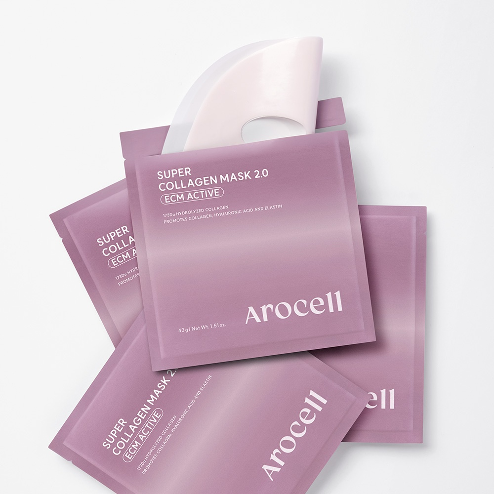

Why 43g Solidified Hydrogel Replaced Cotton Sheet Masks in Korea
Conventional microfiber or cotton sheet masks have a fundamental flaw: after 20 minutes, the fabric begins evaporating moisture back into the bedroom air—pulling hydration out of your skin if you leave it on too long.
By contrast, the Arocell Super Collagen Mask 2.0 (Super Power Mask) contains zero woven fabric. Instead, an entire 43-gram bottle of low-molecular collagen, peptides, and hyaluronic acid is solidified into a flexible two-piece hydrogel sheet that slowly melts from milky-white to crystal-clear over 3 to 5 hours.

Arocell Super Power Mask (2.0 Upgraded Edition): each pouch holds 43g of solidified collagen ampoule—nearly double a standard 25g mask.

Two-piece upper and lower facial cut ensures a gap-free seal around the nose bridge, cheekbones, and jawline.
Key Ingredients & 300-Dalton Absorption Science
- 300-Dalton Ultra-Low-Molecular Collagen: Standard marine collagen molecules are too large to penetrate the outer stratum corneum. Arocell hydrolyzes its collagen down to 300 Daltons for deep overnight elasticity support.
- 10-Peptide Complex & Edelweiss Callus Extract: Targets fine expression lines around the eyes and nasolabial folds while calming skin barrier stress.
- 43g High-Density Occlusion: While most competing hydrogel masks weigh 34g, Arocell’s 43g thickness keeps the gel cool and hydrated right through an 8-hour night’s sleep.

Authentic Korean Cheongdam boutique clinic formulation: turns completely transparent as active ingredients absorb into the skin.
Product Specifications
| Attribute | Arocell Super Collagen Mask 2.0 Detail |
|---|---|
| Net Weight per Sheet | 43g / 1.51 oz. (2-Piece Upper & Lower Hydrogel Sheet) |
| Hero Ingredients | 300 Da Hydrolyzed Collagen, 10 Peptides, Hyaluronic Acid, Niacinamide, Adenosine |
| Recommended Wear Time | 3 to 5 Hours (or Overnight Sleeping Pack until Transparent) |
| Skin Type Fit | Dry, Dehydrated, Loss of Elasticity, Pre-Event Glass-Skin Prep |
Pros & Cons After 4 Weeks of Testing
✅ Pros
- Generous 43g weight stays moist longer and covers the jawline better than thinner 34g hydrogel masks.
- Zero dripping essence—molds tightly to the face within 15 minutes so you can sleep comfortably.
- Leaves an immediate, plump "glass-skin" glow and smoother makeup base the next morning.
⚠️ Cons
- Because the sheet is pure solidified ampoule, apply it with dry fingers and avoid pinching with sharp fingernails during initial placement.
🛒 Check Price & Pack Options on Amazon
Editor Rating: 4.9 / 5.0 ★★★★★
Arocell Super Power Mask (43g Overnight Collagen Hydrogel Pack)
300 Dalton Ultra-Low-Molecular Collagen · Peptides & Hyaluronic Acid · Turns Transparent Overnight (4-Pack / 5-Pack Box)